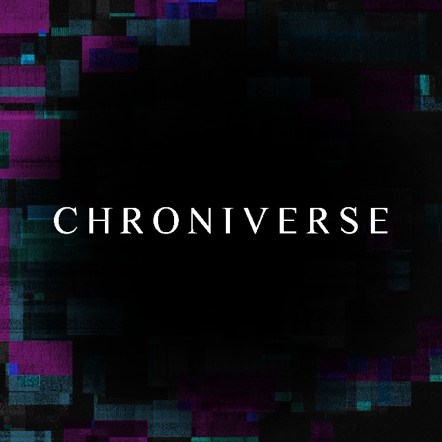

Algunos de los proyectos en los que he participado
Chroniverse
Mi rol fue el de programador en Unity, además me encargué de las animaciones, creacion de texturas y programacion de multiples sistemas siguiendo diferentes patrones de diseño como el Singleton.
FisiBici

Mi rol fue el de desarrollador backend empleando tecnologias como la libreria Flask en python, despliegue en la plataforma Heroku y la base de datos no relacional mongoDB alojada en la nube.
link de la pagina web